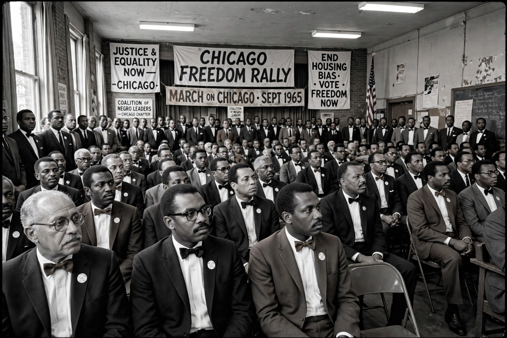

Nation of Islam
| Nation of Islam | |
|---|---|
 | |
| Abbreviation | NOI |
| Formation | July 4, 1930; Detroit, Michigan, U.S. |
| Founder | Wallace Fard Muhammad |
| Headquarters | Mosque Maryam, Chicago, Illinois |
| Leader | Louis Farrakhan (since 1981) |
| Type | Religious and political movement |
The Nation of Islam (NOI) is a religious and political organisation founded in Detroit, Michigan, in 1930 by Wallace D. Fard Muhammad. Combining elements of Islam with black nationalism, it teaches that Fard Muhammad was God in person and that his successor, Elijah Muhammad, was his Messenger. The movement preaches black self-reliance, moral discipline, economic independence and the eventual establishment of a separate black nation. Although its theology differs sharply from orthodox Islam, the Nation has been one of the most influential African-American organisations of the twentieth century.
History
Fard Muhammad preached in Detroit's Paradise Valley neighbourhood from 1930 until his disappearance in 1934. Leadership passed to Elijah Muhammad, who moved the headquarters to Chicago and led the Nation until his death in 1975. Under him the movement built temples, schools, farms, bakeries and other businesses, and published the newspaper Muhammad Speaks. Its most famous minister, Malcolm X, dramatically expanded membership in the 1950s and early 1960s before breaking with Elijah Muhammad in 1964; he was assassinated the following year.
After Elijah Muhammad's death, his son Warith Deen Mohammed led most members toward orthodox Sunni Islam and dismantled much of the old structure. In 1977 Louis Farrakhan broke away and revived the Nation of Islam under its original teachings, rebuilding its Chicago headquarters, Mosque Maryam. Farrakhan organised the Million Man March on Washington in October 1995, one of the largest gatherings of African Americans in United States history.
Beliefs and practices
The Nation teaches that the original humans were black, that white people were created 6,000 years ago by a scientist named Yakub and were given a limited time to rule, and that the time of that rule is ending. Members follow a strict moral code: no pork, alcohol, tobacco or drugs; modest dress; and disciplined family life. The paramilitary wing, the Fruit of Islam, provides security and mentoring. The organisation has a long record of work in prisons and in economically depressed neighbourhoods, promoting rehabilitation and self-sufficiency.
Criticism and relations
The Nation of Islam has been criticised by civil-rights organisations for separatist doctrine and for rhetoric regarded as antisemitic, particularly from Farrakhan, while defenders credit it with instilling pride, discipline and economic habits in communities neglected by others. Mainstream Muslim organisations generally do not recognise its theology as Islamic. Its membership is uncertain but is usually estimated in the tens of thousands.